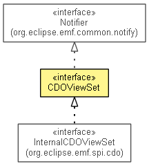

org.eclipse.emf.cdo.view
Interface CDOViewSet
- All Superinterfaces:
- Notifier
- All Known Subinterfaces:
- InternalCDOViewSet
- public interface CDOViewSet
- extends Notifier

A ResourceSet adapter to associate a set of CDOView instances.
Note: A view set must have exactly one resource set associated. A resource set can have only one view set
associated.
- Since:
- 2.0
- No Implement
- This interface is not intended to be implemented by clients.
- No Extend
- This interface is not intended to be extended by clients.
resolveView
CDOView resolveView(String repositoryUUID)
getViews
CDOView[] getViews()
getResourceFactory
CDOResourceFactory getResourceFactory()
getPackageRegistry
EPackage.Registry getPackageRegistry()
getResourceSet
ResourceSet getResourceSet()
Copyright (c) 2011, 2012 Eike Stepper (Berlin, Germany) and others.